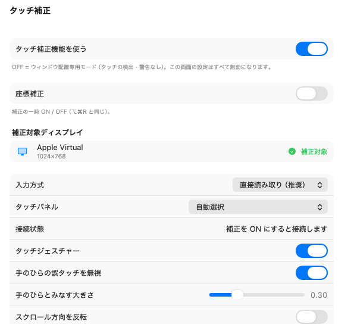

90° 回した外部タッチパネルは、指で触った場所とカーソルの場所がずれます。TouchRotator はその座標を補正します。モニタの設定とウィンドウの配置も、メニューバーから。
macOS 13 以降 · Apple Developer ID で署名し、Apple の公証を受けています

縦向きに回したパネルの座標を補正します。パネルの USB 信号を直接読み取るため、トラックパッドやマウスの操作には影響しません。
解像度・明るさ・ミラーリング・回転を、メニューバーから 1 クリックで。システム設定を開かずに済みます。
ウィンドウの位置と大きさを記憶し、モニタを繋ぎ直したときに元へ戻します。
1,980 円 買い切り・税込
まず 14 日間、無料で全機能を試せます。気に入ったら一度払うだけで、以後の更新も含めてずっと使えます。月額はありません。
購入手続きは販売代行が売主として行います。領収書はそちらから届きます。
まもなく販売を開始します。それまでは無料でお使いいただけます。
| OS | macOS 13 (Ventura) 以降 |
|---|---|
| Mac | Apple silicon · Intel の両方 |
| 必要な権限 | アクセシビリティ、入力監視。macOS が求めるもので、初回起動時に案内が出ます |
| 言語 | 日本語 · English · 简体中文 |
| 署名 | Apple Developer ID で署名済み、Apple の公証（notarization）済み |
使い方の質問、うまく動かないとき、返金のご相談は info@tsubomi.jp へ。日本語・英語で対応します。